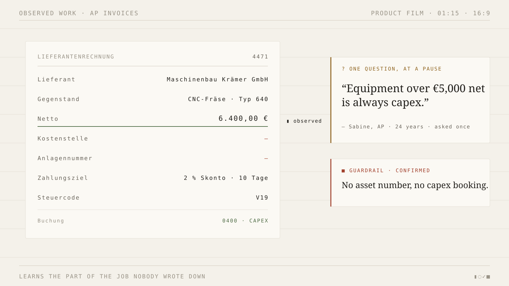

sits beside an expert while she works. It predicts every decision before she
makes it, and the moment it can't explain what she did, it waits for a pause and asks one question. Her answer
becomes a Work Map: executable, checked against later cases, and taught to whoever comes next.
watches in the sandbox ERPasks at a natural pauseevery answer gets a receipt

demo · one rule learned live, from guess to sealed test16:9 · 01:15 · captions on
The whole product, in three moments
It guesses. It asks once. It stops the next person in her words.
No workflow to configure first. The apprentice starts from the decisions themselves and only earns the right
to be trusted after later cases agree with it.
01
It guesses before she acts.
On every invoice the apprentice writes down the fields and the action it thinks will be taken —
before the save. When the guess is wrong, that gap is the only thing it pays attention to.
Netto6.400,00 €
cost centre · guess◌ 0400
writtenbefore the save
02
It asks one question, at a pause.
Not a form, not an interview. The question arrives when her hands stop, in her language, and the answer
is compiled into a rule with a threshold and, if she named one, a guardrail.
? at the pause
“Equipment over €5,000 net is always capex.”
Sabine · AP · 24 years · asked once
03
It stops the new hire in her words.
When a new hire tries to book something the expert would have held, the save is blocked — and the reason
is the expert's own sentence, not a policy document's.
■ blocked save
“No asset number, no capex booking.”
■ guardrail · behaviour agreed, twice
Words propose, behaviour disposes
You can't argue with it. Only later cases can move it.
Every answer produces a receipt: the prediction before, the quote, the rule and its parameter diff. Sealed
tests then freeze the map's predictions, hash them, and let a human label fresh cases around the boundary.
fresh round after restarting from the saved map11 / 11
labels come from humans only · each label also teaches
Simulated held-out eval over the invoice pack:doc-only 38%always-ask-why 73%the apprentice 98%at 0% confabulation
The character
Meet .
is the apprentice, not the product. She has one notebook and one job:
to be invisible until she's needed, then ask the smallest question that unlocks the work. Her sprite is the
only illustration on this page — no stock photography, no robot mascot.
invisible until wantedno panel shouting for attention
one question at a pausenever during the work
never guesses silentlyevery prediction carries its belief
Data & privacy
What it sees, what it scrubs, what it never touches.
An apprentice that learns from work only needs the work. Here is the whole ledger of what is stored, in plain
language, before it is sent anywhere.
▮ Collected, per session
The decision. The fields on the case and the action taken, at the moment of the save.
The guess. What the apprentice predicted before the save, kept to measure the gap.
Your answer. The transcript of the one question, in your own words.
Case ids and timestamps so a claim can be traced back to a real case.
Frozen predictions for a sealed test, committed before anyone labels it.
§ Scrubbed before storage
Bank accounts → [IBAN], checksum-validated, any country.
Emails → [EMAIL] · phone numbers → [PHONE].
Payment cards → [CARD], Luhn-checked before redaction.
Tax ids → [TAX_ID] · secret URLs → [URL_SECRET].
Amounts, cost centres and invoice numbers are kept: the rules depend on them.
■ Never collected
Passwords, keystrokes, or anything outside the sandbox tab.
Screen frames: they stay on the observer's device and are dropped when capture stops.
Raw microphone audio. Only the transcript of the answer is kept.
Your other browser tabs, files, or clipboard.
Anything at all when capture is off — the default.
The Work Map is exportable as data and the session can be deleted. A rule is only trusted once
✓ later cases agree with it; until then it says so.
Start
Watch it learn a rule nobody wrote down.
in the sandbox ERP · AP invoices · rehearsal and live modes are always labelled